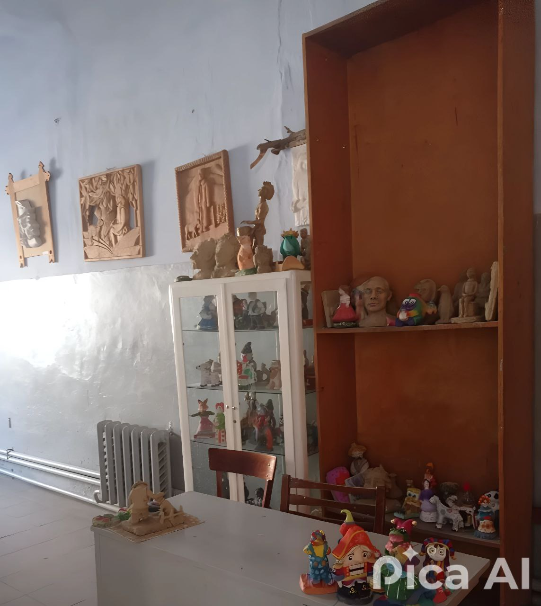

Sculptură
• Занятия по скульптуре будут проходить с 1 по 4 класс
Cursurile de sculptură se vor ține de la clasele 1 până la 4
Cursurile de sculptură se vor ține de la clasele 1 până la 4
Запись в Художественную школу:

Cкульптура
О предмете:
Скульптура – работа с пластическими материалами (глина). Ученики изучают основы лепки, пропорции, анатомию и законы объемной композиции. Создаются барельефы, фигуры животных, бюсты.